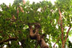
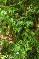
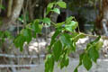
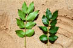
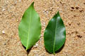
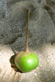
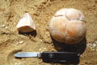
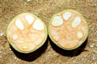
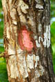
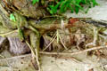

Common name in Singhalese : Mududelum










Diagnostic characters
Botany & morphology
Reproductive biology
Ecology
Distribution
Tree 4 to 12 m, without conspicuous buttresses. Leaves cordate. Flowers white; fruit capsule, globose.
Leaves compound, alternate, pinnate, leaf rachis and petiole to 22 cm long, leaflets in 2 to 4 pairs (5), ovate to cordate, sometimes subfalcate, apex acute to acuminate, base broadly cuneate to cordate, asymmetric, 5 - 10 x 3 - 5 cm, venation conspicuous.
Inflorescence thyrse, 10 – 18 cm long.
Flowers creamy white; calyx 4 lobed, short; petals 4, free, spreading, contorted; stamens 8; ovary 4 - celled, style thick with short stigma.
Fruits capsule, globose, 6 - 8 cm, diameter, seeds 6 - 16.
Pollination by honeybees.
It is a beach mangrove growing in sandy sites above mean high tide. Also found on cliffs and rocks near surf or on sandy substrates above high watermark.
Old World tropics from East Africa to Tonga. Rarely found Sri Lanka.
Top of the page